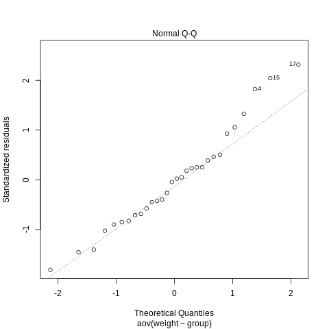
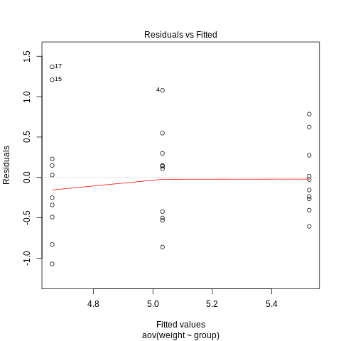

Anova - Model Assumptions Check
This third post of the ANOVA series explores the different assumptions that are required in order for the asymptotic inference on the significance of group means to be true.
In the specific the model assumptions for which the group specific means are properly estimated and the ratio of the mean squared errors converges to the F-distribution depends on the following assumptions:
- errors are independent
- errors are normally distributed
- homoscedasticity of the variance
- zero mean error expectation
I will next explore and test the four based on a toy dataset.
QQ-Plot
This compares the empirical quantiles to the theoretical quantiles of a normal. If the empirical quantiles of the error term are in line with the normality assumption we should observe the data points to lie on the 45 degree line.
library(datasets)
data (PlantGrowth)
str (PlantGrowth)
fit <- aov (weight ~ group, data = PlantGrowth)
# Open a svg file
png("../images/qqplot.png")
# 2. Create a plot
plot (fit, which = 2)
# Close the pdf file
dev.off()

Notice that you can address the issue of the normality distribution by transforming your variables; moreover a failure of normality is will imply that the OLS estimation will not be BLUE, however the majority of the results will still hold for the estimation.
Tukey-Anscombe Plot
This plots the residuals \eplison{ij} vs. the fitted values \hat{\mu + \alpha_i}. The idea is to check if there is any systematic relation among the fitted values and the residuals. If this is the case the independence of the errors is not given.
Moreover the plot might help to assess, whether we observe homoscedasticity of the errors or rather if heteroscedasticity is present.
# Open a svg file
png("../images/tukey.png")
# 2. Create a plot
plot (fit, which = 1)
# Close the pdf file
dev.off()

Notice that the red line represents the LOESS estimator. It is hence a smoother and a local parametric fit.